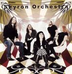

| Artist: | Skyron Orchestra |
| Title: | Skyron Orchestra |
| Label: | Transsubstans Records Trans 004 |
| Length(s): | 42 minutes |
| Year(s) of release: | 2004 |
| Month of review: | [04/2005] |
| 1) | Free Ride | 3.19 |
| 2) | The Tunnel | 3.52 |
| 3) | Call It Love | 5.11 |
| 4) | Earthy Ground | 3.09 |
| 5) | Soft Palate | 4.01 |
| 6) | Nobody's Diary | 4.21 |
| 7) | The Doll | 4.24 |
| 8) | Exploding Mind | 3.10 |
| 9) | Pax Aeterna | 6.37 |
| 10) | Alena | 4.13 |
The Tunnel features the same organ sound, but is a bit more grave and slower, with strumming guitar. Call It Love and Nobody's Diary has a musing feel similar to that of The Tunnel. Closer Alena is an instrumental led by the organ, played slowly now, with sparse support from guitar and bass. The other tracks are more up tempo songs, happy almost.
The songs are short, in general with a traditional pop structure. The organ remains the main instrument in creating the melody, maybe even more so than the vocals do. Even though rhythm is constantly and clearly present, with quite a definite fill, it does remain in support of the melody. Now and then the guitar receives room for a solo, always of the psychedelic kind.